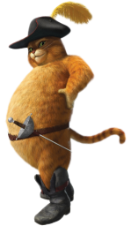
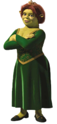

Instructions
Lord Farquaar is attacking Shrek’s swamp.
Time is running out and you have got to save Princess Fiona, Donkey and Puss in Boots from the other side of the swamp before it is too late! Collect bonus points along the way by saving other characters.
Use the arrow keys to move and j to jump.
Click on start to start the game.
Good Luck.
You have01:00minute to save Puss in Boots, Donkey & Princess Fiona
SCORE
SAFE

